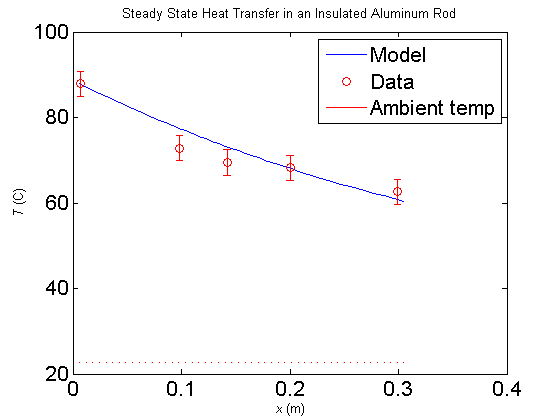

Contents
Insulated Rod Simulation
close all;
load('June1SteadyStateInsulatedHeating.mat')
radius = 0.0111;
length = 0.305;
nstep = 50;
dx = length/nstep;
k = 180;
insulFudge = 4;
pwrFrac = .9;
h5 = length - 0.006;
h4 = length - 0.105;
h3 = length - 0.163;
h2 = length - 0.207;
h1 = length - 0.298;
Calibration
readRangeStart = 1;
readRangeEnd = 50;
sensorDataC = 1:6;
offset = offsetCalculator('June1TransientInsulatedHeating.mat',200,6);
calibratedData = Calibrate(readings,readRangeStart,readRangeEnd,6);
for i = 1:6
sensorDataC(i) = mean(calibratedData(i,:)) + offset(i);
end
sensorPos = [h1 h2 h3 h4 h5];
x = 1:nstep;
T = 1:nstep;
Tamb = sensorDataC(6)+273;
T(1) = sensorDataC(1)+273;
resistorPwr = 12*0.8;
P_in = resistorPwr*pwrFrac;
P_out = P_in;
x(1) = dx;
for i = 2:nstep
x(i) = i*dx;
T(i) = T(i-1);
P_in(i) = P_out;
P_loss = insulFudge*(2*pi*radius*dx)*(T(i) - Tamb);
P_out = P_in(i) - P_loss;
dT = P_in(i) * dx/(k * pi * radius^2);
T(i) = T(i) - dT;
end
display(P_out);
P_out =
4.446466858327812
figure
plot(x,T-273);
hold on
errorbar(sensorPos,sensorDataC(1:5),[3 3 3 3 3],'ro');
plot(x,Tamb-273,'r');
title('Steady State Heat Transfer in an Insulated Aluminum Rod');
xlabel('{\it x} (m)')
ylabel('{\it T} (C)')
set(gca, 'FontSize', 16)
set(gca, 'FontName', 'TimesRoman')
legend('Model','Data','Ambient temp');
